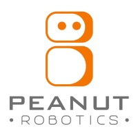
Mobile Manipulation · Peanut RoboticsMy first job out of grad school was building robots that clean hotel bathrooms.
1.75 years at Peanut Robotics as a Robotics Engineer — owning the manipulation subsystem, sensor integration, perception, and operator tooling on a mobile manipulator deployed in real hotels.
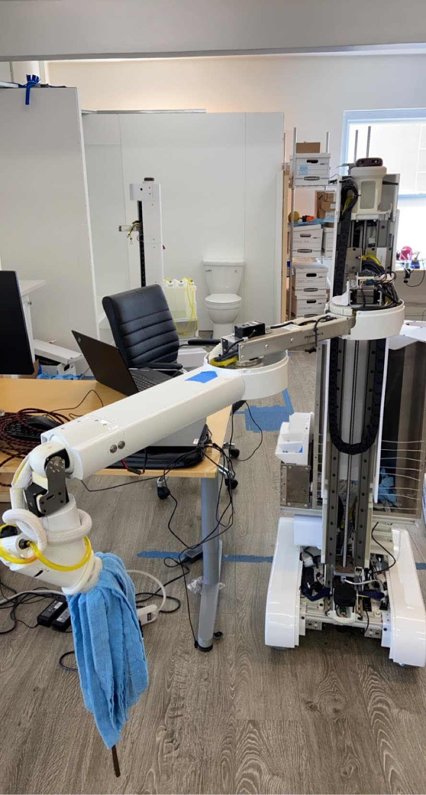
I joined Peanut right out of CMU. The office was a single room in San Francisco — around 19 people, a couple of mobile manipulators rolling around, and a lot of things that didn't work yet. There was one other robotics engineer more senior than me. I started by getting the robot up and running, and over time took on more until I owned the arm software.
One design decision shapes most of the work below. Peanut's robots don't plan cleaning motions on the fly from cameras — instead, an operator teaches the robot by guiding the arm and setting waypoints, and the robot replays that trajectory. It's a deliberate choice: it's far easier to build reliable cleaning behavior this way than with real-time camera-based planning. But it creates two hard requirements — teaching has to be fast, and a taught trajectory has to survive the fact that no two bathrooms are identical. A lot of what I built comes back to those two things.
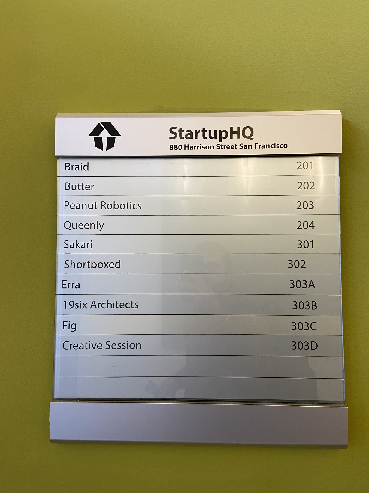
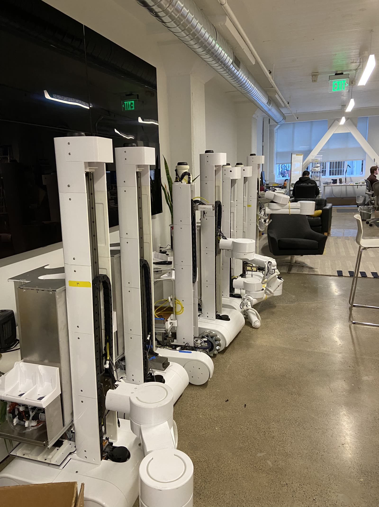
Owning the arm and end effector
The arm is built in-house, so its dynamics aren't perfect — and it's what physically does the cleaning. It has to follow smooth, time-optimal trajectories while the scrubber actuates in sync, hold steady against a surface, and stay well-behaved across hardware upgrades. The scrubber end effector adds its own problem: an open-loop motor bogs down when pressed into a surface, which hurts cleaning quality, and a stalled motor in contact is a safety risk.
Used TOPPRA for time-optimal path parameterization, integrated with ros_control so the 6-DOF arm executed smooth trajectories with the tool in sync. Tuned and analyzed the position, velocity, and compliance controllers — critical work on an in-house arm, especially through controller upgrades. For the end effector, I built a closed-loop scrubber using a hall sensor, magnets, and DC motor: PID control, stall detection in contact, and a hall-sensor safety system. I also held deep knowledge of the core control stack and was a point person when robots were deployed in the field.
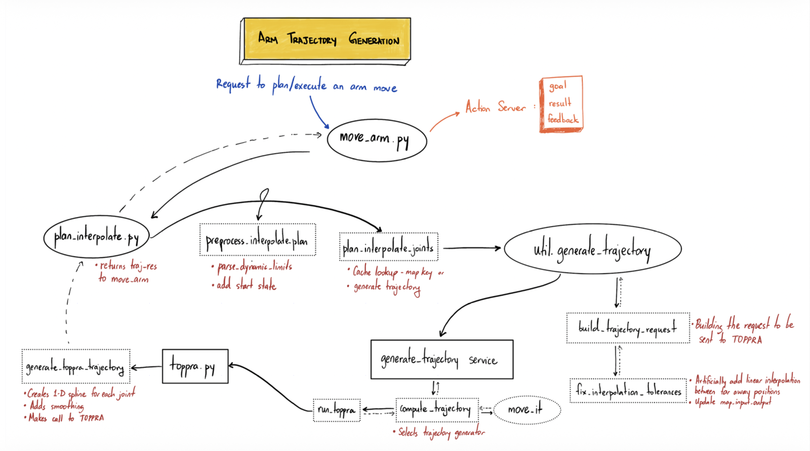
Making teaching fast — live trajectory
Operators taught trajectories with a joystick, jogging the arm to capture joint positions one at a time and chaining them into a path. For a complex object like a toilet, that took a skilled operator 2–4 hours — plus a lot of retraining. Since every new location had to be taught this way, teaching speed was a hard ceiling on how fast Peanut could scale.
Built a live trajectory system that let operators teleoperate the arm by hand — physically guiding it through the cleaning motion while it recorded the trajectory directly. The work wasn't just capture: I had to plug into the existing system's recovery behaviors for failure cases, spraying logic, and more. Getting it right meant going deep on the operators' actual pain points and building something they would genuinely use.
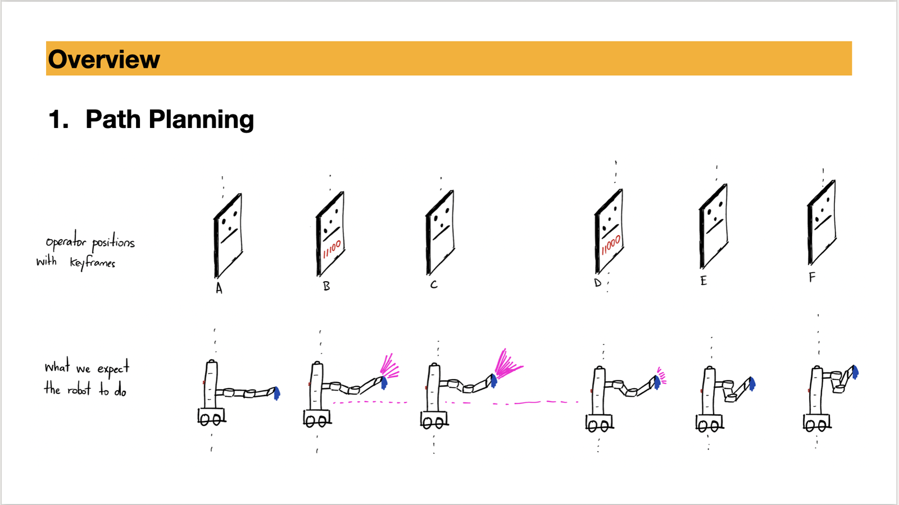
Surviving room-to-room variation
Even hotel bathrooms with the same layout vary — fixtures sit a little differently from room to room. A trajectory taught in one bathroom doesn't directly transfer to the next: run it as-is and the arm collides or misses the surface, and the system can't scale to many rooms. I ran an in-depth study of where the variation actually lived, and found the toilet pose varies the most.
Built a point cloud registration pipeline that measures how far the toilet has shifted in a given bathroom, then applies that delta to the cleaning trajectory — either by moving the base or by shifting the arm trajectory itself. Used passive stereo depth (ZEDx) for the scan, and experimented with Cartesian planning through mission control to apply the correction.
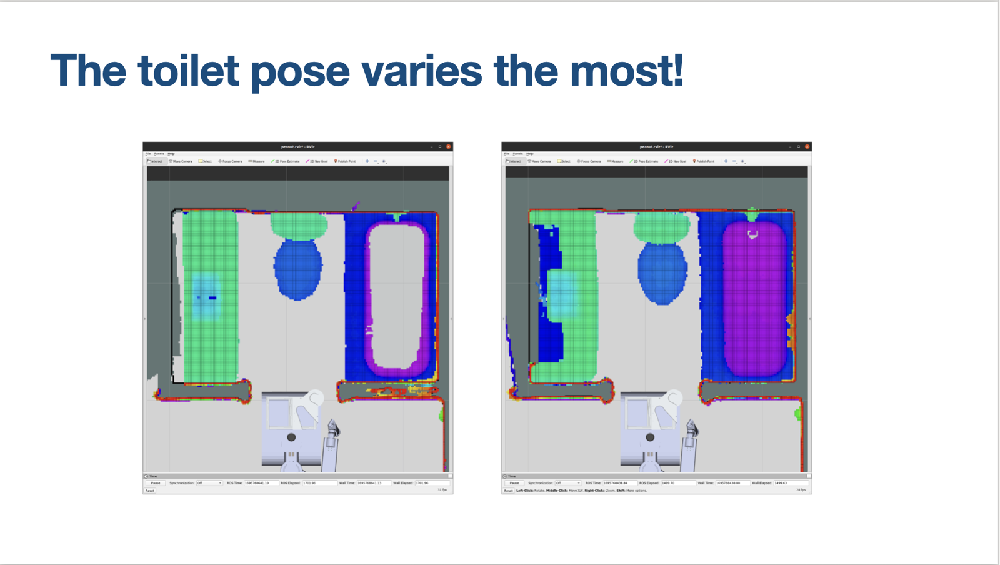
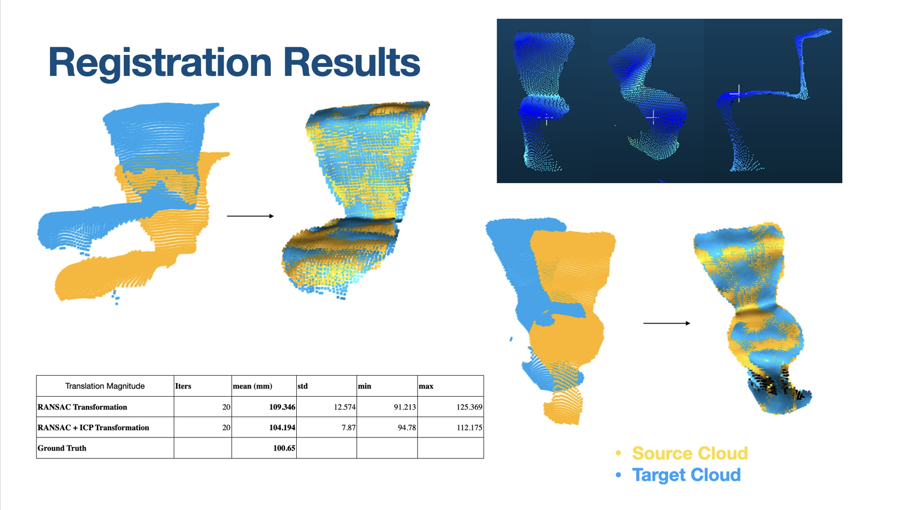
Getting reliable depth in a bathroom
Registration is only as good as the depth behind it, and bathrooms are a worst case for depth cameras. Light bounces off glossy plastic seats and porcelain — specular surfaces — and you get wavy, unreliable point clouds. On top of that, the robot needed four cameras running at once without one silently dropping out and degrading the whole stack.
Ran a careful evaluation of four depth systems — Orbbec, RealSense, Luxonis, and ZEDx — weighing specular performance, range, width, and software tradeoffs, and chose the Orbbec (it had the best filtering for the bouncing light). Then built the integration: robust bringup of four cameras with a system heartbeat and an auto-recovery system, plus easy toggling and selection of depth streams to manage compute — debugging deep into the Orbbec SDK along the way.
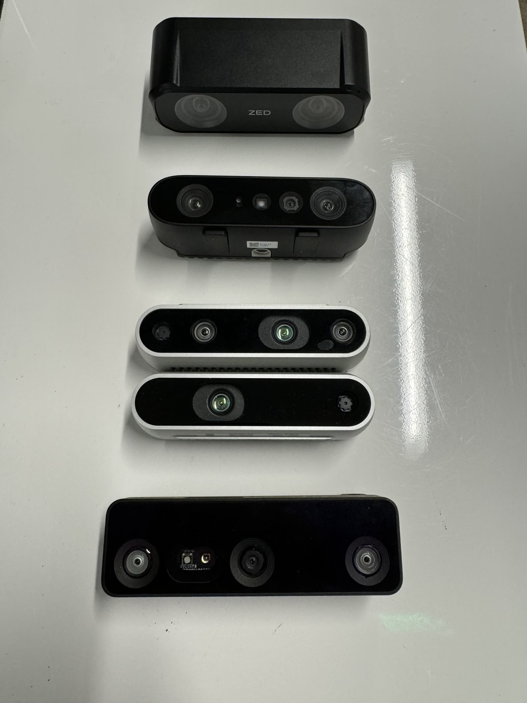
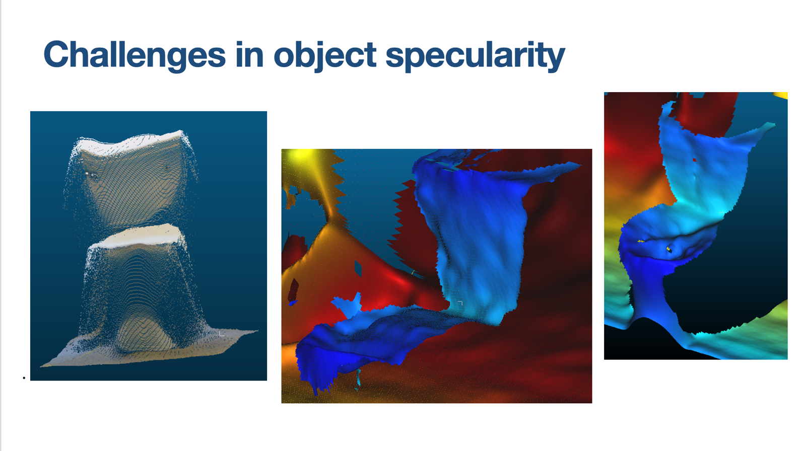
Calibrating the in-house arm
Because the arm is built in-house, there were real inconsistencies to chase down — most notably droop, where the arm sags from its commanded position under load. For contact cleaning, a few millimeters of error directly hurts clean quality, and it breaks sim-to-real because the model stops matching the physical robot.
Set up an Optitrack motion capture rig on the arm in-house and connected it to ROS — building out the kinematic chain, a lot of transform and frame math, and URDF cleanup. Profiled droop under different loads, used the profiles to correct it and update the kinematic model.
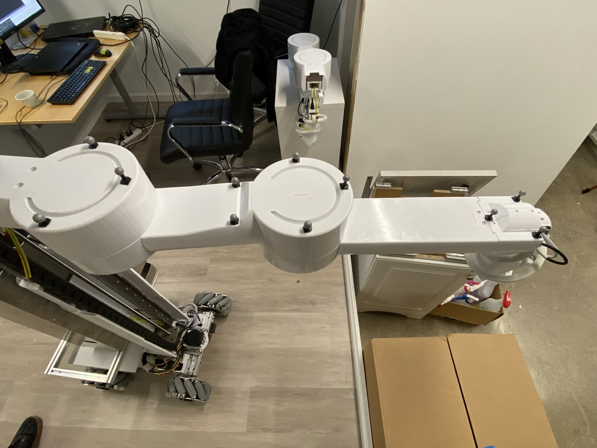
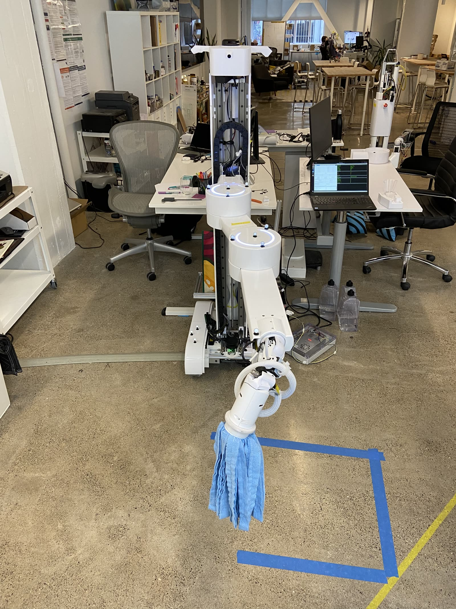
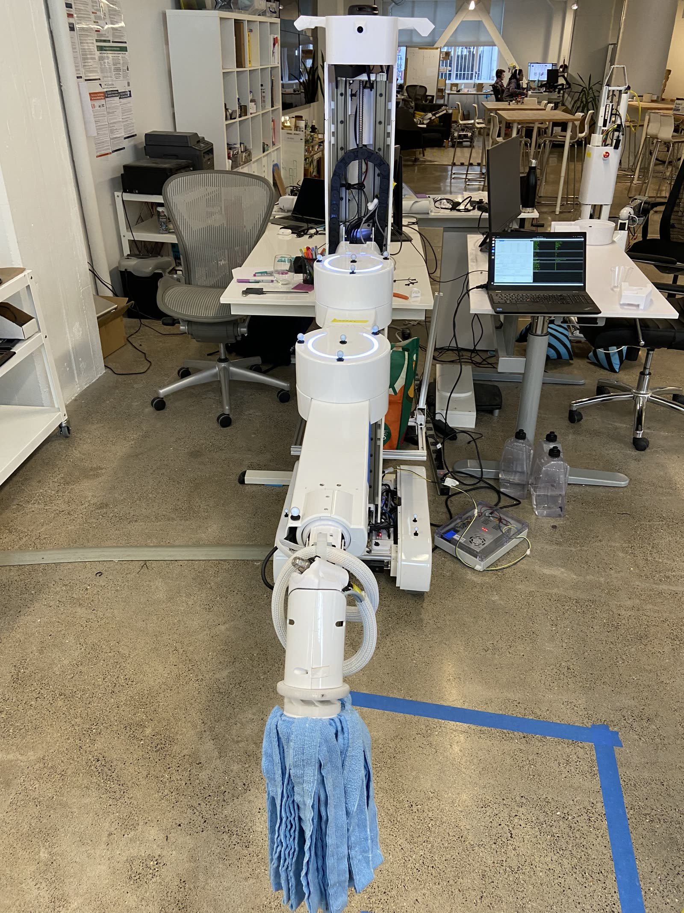
Keeping deployed robots alive — the test suite
Robots kept breaking down in the field, and diagnosing them remotely was slow. When something went wrong, an operator with no engineering background needed a way to find out what was broken without an engineer on a call.
Built a manufacturing test suite operators could run as scripts to get a clear report of what was and wasn't working — from the low level (individual arm motors, IDs, baud rates, udev rules) up to full-system checks (complete motion, reported currents, spikes, end-effector behavior), at small, medium, and large scale. Also shipped a simple arm calibration tool so operators could calibrate the arm themselves.
Getting the robot around the space
Alongside the manipulation work, I spent time on the navigation stack — SLAM mapping with
gmapping, testing move_base and then Nav2 with the MPPI controller
in simulation and on the real robot, including obstacle-avoidance and wall-following runs. The
robot has to get itself to and around the work area reliably before the arm can do anything.
The hardware underneath it all
A mobile manipulator is many subsystems — arm, base, elevator, scrubber, and a stack of sensors — and a deployed robot only works if all of them do. I did bring-up and debugging across Dynamixel servos, DC and stepper motors, a BLDC base motor, hall sensors (latching and distance), crush sensors, encoders, limit switches, and a magnetometer. Plus low-level system and performance work: a udev-rules wizard to automate device setup, and optimizing Dynamixel syncRead from 15 ms to 10 ms to tighten the arm's control-loop rate.
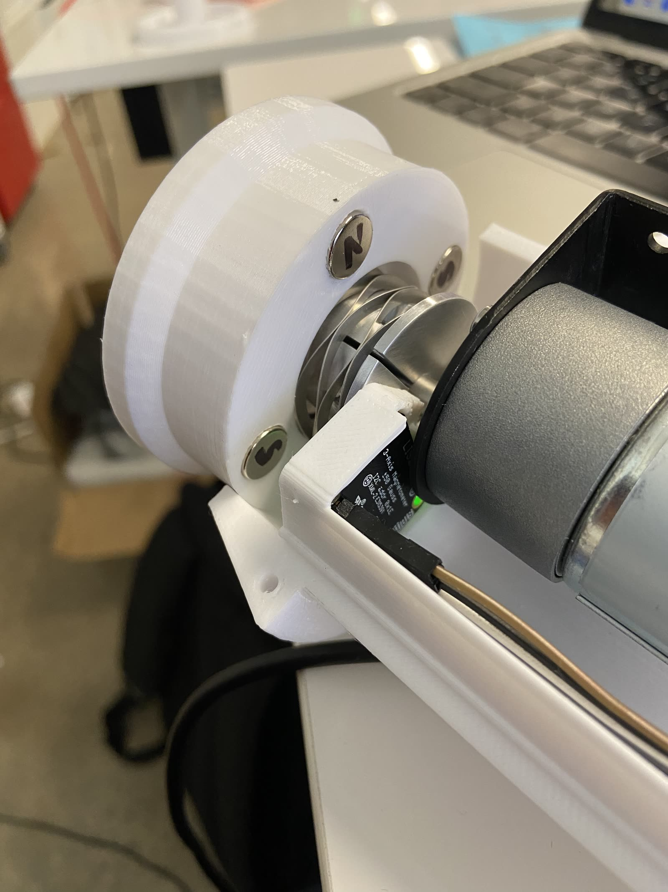
[INSERT — title for your reflection]
[INSERT — in your own words. What this place meant to you, what you learned, what surprised you about building robots for the real world. This is also where you can acknowledge that Peanut ran out of funding and wound down — it's an honest, human part of the story.]
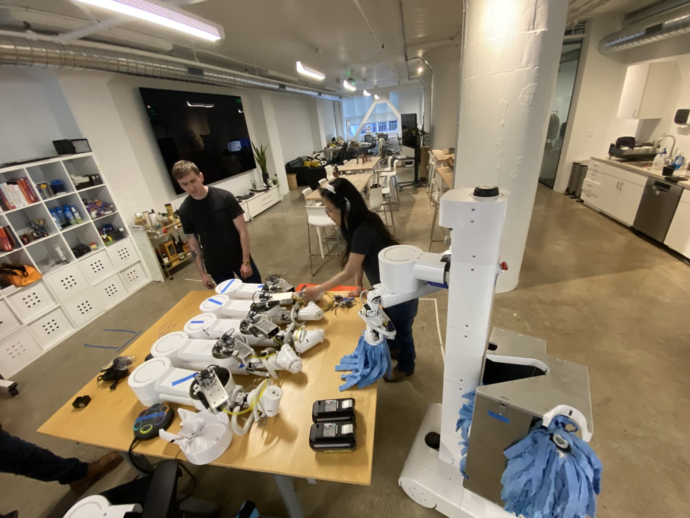